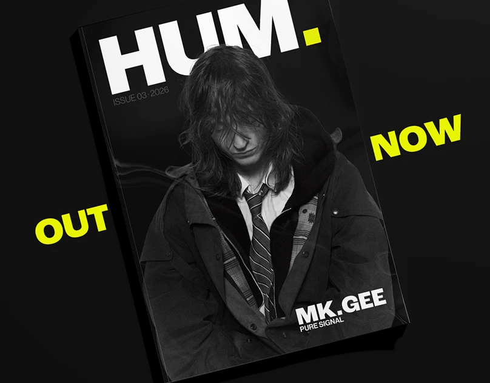
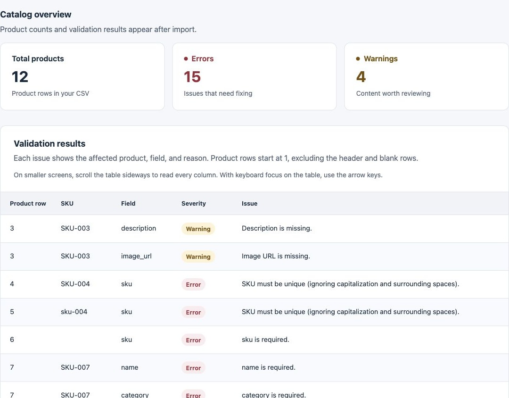

Visual identities, typography and editorial work.
Ideas shaped into clear visual communication.
I work across digital content and visual design, with experience in asset production, quality checks and content operations for web and app workflows.

Visual identities, typography and editorial work.
Ideas shaped into clear visual communication.

Web projects, content operations and automation.
Practical tools for better digital workflows.